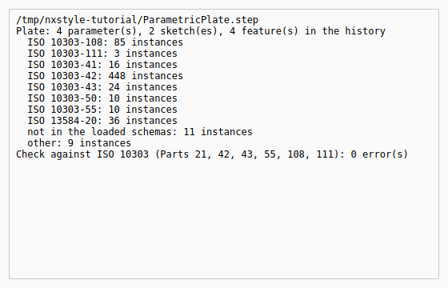
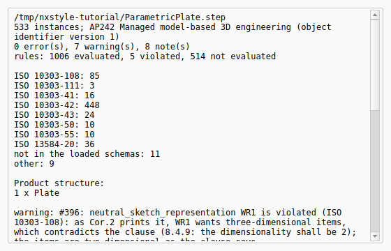
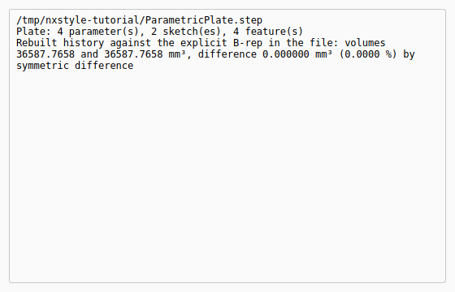

Tutorial AL: Design intent through STEP (ISO 10303-55, -108, -111)
| Standards |
ISO 10303-21 (the STEP file), ISO 10303-11 (EXPRESS), ISO 10303-42 and -43 (geometry, representations), ISO 10303-55 (construction history), ISO 10303-108 with Cor.1 and Cor.2 (parameters, constraints, sketches), ISO 10303-111 (features) |
| You learn |
STEP with Parameters, Check STEP, Import STEP with Parameters, a design change in a part that came from a file |
| Sizes |
A plate 80 × 50 × 10, its long edge rounded R3, a Ø12 hole repeated three times 20 apart |
| Background |
A STEP file usually carries the finished shape and nothing about how it was made. The supplier who receives it can measure it, machine it or cut it, but cannot change a dimension: there is no dimension to change. Here the plate goes out with its design intent, the history, the sketch constraints and the parameters, in the same STEP file as its shape, and a new part is rebuilt from that file and edited.
Step by step
1. The plate and its parameters
-
a spreadsheet with Length 80 mm, Width 50 mm, Thick 10 mm and HoleR 6 mm;
-
a sketch on XY, a rectangle constrained to the origin, its two sizes the expressions
Spreadsheet.LengthandSpreadsheet.Width; -
Extrude by
Spreadsheet.Thick, Edge Blend R3 on the long vertical edge; -
a circle of radius
Spreadsheet.HoleR, cut through all with Extrude (Subtract), and a Pattern Feature of the hole: three, 40 mm overall along X.
2. Out: STEP with Parameters
Select the body, then PMI › STEP with Parameters, a file name, OK.
The Information window lists what went into the file, by part of ISO 10303: the B-rep OpenCASCADE writes (Part 42), the history (Part 55), the features (Part 111), the sketches with their constraints and the four parameters with the expressions that use them (Part 108). The last line is the file’s check against the standards: no error.

3. Check STEP
PMI › Check STEP, the same file, OK. It reads the file as ISO 10303-21, names its application protocol (AP242), checks every instance against the EXPRESS schemas of Parts 42, 43, 55, 108, 111 and 112, and lists the product structure (here one part): 0 errors.
The warnings are not mistakes in the file. Each names a place where the standards contradict themselves, so that no file can meet every rule there (see Where ISO 10303 contradicts itself). Every rule of the schemas is evaluated, the schemas' own functions included, and the report says how many: the rules that are not met are exactly those warnings. The notes count the entities of the application protocol itself (the product structure, the B-rep shape representation), and the rules that need them are counted as not evaluated: tick Download the AP’s schema if it is missing and they are checked against AP242’s own long form too, every rule decided, with the same result, no error (see Application protocols).

4. In: Import STEP with Parameters
Ctrl+N, PMI › Import STEP with Parameters, the file, OK.
The new part’s body fills with the history: the sketches with their constraints, the extrusion, the edge blend, the hole through all and its pattern, with the names they had at the source. A Parameters spreadsheet holds Length, Width, Thick and HoleR, and the four expressions use it. The rebuilt solid is compared with the B-rep in the file: they are the same, to the last mm³.

The replay
| # | In the book (NX) | In FreeCAD NX-Style | Result | Notes |
|---|---|---|---|---|
AL1 |
A plate driven by parameters: Length, Width, Thick, HoleR in a spreadsheet; the sketch’s dimensions and the extrusion’s length are expressions of them; an edge blend, a hole through all and a pattern of it |
modelled by script (tutorials J and K build such expressions with the ribbon and the Expressions table) |
differs |
features ['Pad', 'EdgeBlend', 'ExtrudeSubtract', 'PatternFeature']; volume 36587.766 mm³; expressions ['HoleSketch: Spreadsheet.HoleR', 'Pad: Spreadsheet.Thick', 'Sketch: Spreadsheet.Length', 'Sketch: Spreadsheet.Width'] |
AL2 |
PMI > STEP with Parameters: the part, its history, its sketches with their constraints and its parameters in one STEP AP242 file |
Plate selected, ribbon 'PMI › Exchange > STEP with Parameters', file name typed, MB2 = OK |
differs |
instances by part: ISO 10303-42 448, ISO 10303-55 10, ISO 10303-108 85, ISO 10303-111 3; nothing left out. NX’s STEP export writes the B-rep (and PMI); the history, the sketch constraints and the expressions stay in the .prt |
AL3 |
Check STEP: the file against ISO 10303-21 and the EXPRESS schemas of Parts 42, 43, 55, 108, 111 and 112 |
ribbon 'PMI › Exchange > Check STEP', file name typed, MB2 = OK |
differs |
0 error(s), 7 warning(s), 8 note(s); the warnings name the places where the standards contradict themselves. NX has no such check |
AL4 |
New part, PMI > Import STEP with Parameters: the part rebuilt from the file, editable |
Ctrl+N, ribbon 'PMI › Exchange > Import STEP with Parameters', the file typed, MB2 = OK |
differs |
into the new part’s Body: features ['Pad', 'Fillet', 'Pocket', 'LinearPattern']; a Parameters spreadsheet and the expressions ['Parameters.HoleR', 'Parameters.Length', 'Parameters.Thick', 'Parameters.Width']; against the source part: 0.000000 mm³ differ, and against the B-rep in the file the same (the report’s last line). NX’s STEP import gives a solid without history |
AL5 |
A design change in the received part: HoleR 6 → 4 mm; the three holes follow, as in the source |
HoleR typed into the Parameters spreadsheet by script (the same change in the source part) |
differs |
volume 36587.766 → 38472.721 mm³ in both parts; 0.000000 mm³ differ |
AL6 |
The rebuilt plate after the change |
render of the graphics window |
same |
22.6% of the view shows the part (an occupancy check: something is drawn; the shape itself is checked by its geometry) |
| Result | Means |
|---|---|
same |
The book’s NX steps work as written. |
differs |
It works, but the FreeCAD way is different; the notes say how. |
limit |
The book’s way fails in FreeCAD itself; a workaround follows in the next steps. |
missing |
FreeCAD has no such function; a stand-in follows. |
skipped |
Not replayed; the notes give the reason. |
FAILED |
Did not work. |
What differs from NX
-
NX’s STEP export writes the B-rep (with PMI in AP242); the history, the sketch constraints and the expressions stay in the
.prt, and a STEP import gives a solid without history. -
Sketches attached to an origin plane or to a face come back attached (the face found again by its geometry); others come back placed where they were.
-
A feature ISO 10303-111 and -42 cannot represent (Draft, Loft…) is written as a hybrid step with its explicit solid, so the history goes on past it; the report names it, and the B-rep in the file still carries the whole part.
-
In FreeCAD 1.1.4 itself, changing this plate’s Length or Thick loses the edge blend’s edge (FreeCAD’s topological naming, in the source part as much as in the rebuilt one), so the change here is HoleR.